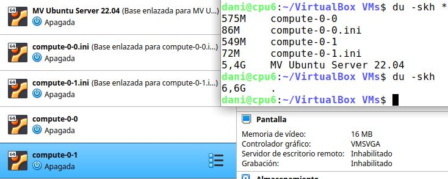
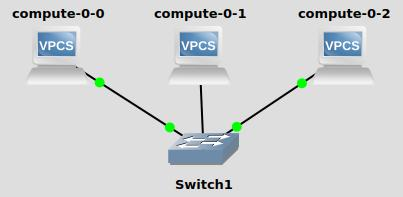
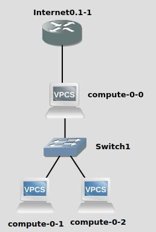
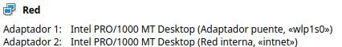
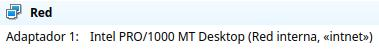

NIS#
Originalmente NIS se llamaba Páginas Amarillas (Yellow Pages), o YP, que todavía se utiliza para referirse a él. Desafortunadamente, ese nombre es una marca registrada de British Telecom, que exigió a Sun abandonar ese nombre. Sin embargo YP permanece como prefijo en los nombres de la mayoría de las órdenes relacionadas con NIS, como ypserv e ypbind.
DNS sirve un rango limitado de información, siendo la más importante la correspondencia entre el nombre de nodo y la dirección IP. Para otros tipos de información, no existe un servicio especializado así. Por otra parte, si sólo se administra una pequeña LAN sin conectividad a Internet, no parece que merezca la pena configurar DNS. Ésta es la razón por la que Sun desarrolló el Sistema de Información de Red (NIS). NIS proporciona prestaciones de acceso a bases de datos genéricas que pueden utilizarse para distribuir, por ejemplo, la información contenida en los ficheros passwd y groups a todos los nodos de su red. Esto hacee que la red parezca un sistema individual, con las mismas cuentas en todos los nodos. De manera similar, se puede usar NIS para distribuir la información de nombres de nodo contenida en /etc/hosts a todas las máquinas de la red.
En el servidor (Ubuntu server 22.04)#
Instalamos
apt-get -y install portmap
#Instalamos dominio servidor.X.nis donde X son las 3 primeras iniciales de tu nombre
apt-get -y install nis
En /etc/hosts añadimos:
<IP> servidor.X.nis
Ejecuta el comando domainname para mostrar o configurar el nombre de dominio de la máquina.
domainname servidor.X.nis
Copia el nombre de su servidor NIS en el archivo /etc/defaultdomain (de aquí lo leerá el servicio ypserv.service que inicia la nis)
# Actualizamos la base de datos y creamos los mapas de la NIS
/usr/sbin/ypserv start
/usr/sbin/rpc.ypxfrd
/usr/lib/yp/ypinit -m
# Comprobamos
rpcinfo -p
En el caso de que no funcione, puedes buscar posibles errores en firewall (iptables -F)
Iniciar el servidor nis :
systemctl enable ypserv.service
systemctl status ypserv.service
Configurar archivo de hosts lo ideal es configurar todos los equipos que estarán validando contra NIS en el archivo /etc/hosts para independizarse del DNS.
En el cliente#
# Instalamos el paquete nis
apt-get -y install nis
Podemos comprobar el nombre del servidor NIS (servidor.X.nis) con el comando nisdomainname o domainname en el caso de que queramos cambiarlo
nisdomainname servidor.X.nis
Copia el nombre de su servidor NIS en el archivo /etc/defaultdomain (de aquí lo leerá el servicio ypbind.service que inicia la nis)
En /etc/nsswitch.conf añadiendo al final de cada línea la palabra «nis».
passwd: files systemd nis
group: files systemd nis
shadow: files nis
En /etc/yp.conf añadimos ypserver <ip_del_servidor_nis>, y añade el servidor al /etc/hosts
Por ultimo lanzamos el servicio ypbind
ypbind
para comprobarlo puedes utilizar el comando:
getent passwd
Para hacer que se cree el directorio de los usuarios de forma automatica marcarlo con el siguiente comando:
sudo pam-auth-update
PAM (Pluggable Authentication Modules) establece una interfaz entre los programas de usuario y distintos métodos de autenticación. De esta forma, el método de autenticación se hace transparente para los programas.
Haz que el cliente NIs se inice como servicios en el arranque del sistema, para ello
systemctl enable ypbind.service
systemctl status ypbind.service
Si diera algún error al conectar, podría ser por el firewall, para borrar las reglas: iptables -F
Con entortno grafico, por ejemplo para el xfce, si queremos que aparezca en la pantalla de inicio en /usr/share/lightdm/lightdm.conf.d/50-greeter-wrapper.conf añadimos greeter-show-manual-login=true y reiniciamos el entorno gráfico sudo service lightdm restart
Caso práctico: NIS con adaptador puente#
Haz dos clones enlazados, generando nuevas direcciones MAC, de «MV Ubuntu Server 22.04» y haz que tengan las siguientes IPs:
Clon enlazado 1 : «compute-0-0» 10.4.X.Y/8 (DHCP si usas portátil)
Clon enlazado 2 : «compute-0-1» 10.5.X.Y/8 (DHCP si usas portátil)
VBoxManage list vms VBoxManage list runningvms VBoxManage startvm 'compute-0-0' --type headless VBoxManage startvm 'compute-0-1' --type headless
Es decir, tendríamos la siguiente configuración
Cambia el nombre de la maquina compute-0-1 para ello modifica el archivo /etc/hostname y pon las ips correspondientes (/etc/netplan/00-installer-config.yaml) con los nombre correspondientes en el archivo /etc/hosts de ambas maquinas
Crea los siguientes usuarios y grupos en el servidor (compute-0-0)
tunombre1 con contraseña alumno dentro del grupo tuapellidotunombre2 con contraseña alumno dentro del grupo tuapellidotunombre3 con contraseña alumno dentro del grupo tuapellidotunombre4 con contraseña alumno dentro del grupo tuapellidoInstala el servidor NIS en el servidor (compute-0-0)
Instala el cliente NIS en el cliente (compute-0-1)
Reinicia las maquinas y comprueba que todo funciona, esto te quitará mucho trabajo en el futuro.
Caso práctico: NIS con red interna#
En el siguiente ejercicio vamos a cambiar la configuración como se muestra en la siguiente imagen.
Creamos un nuevo adaptador red para el servidor, le asignamos una red interna y le ponemos la dirección 172.16.0.10/16
Cambiamos en el cliente el adaptador a una red interna, le asignamos la red 172.16.0.11/16
Haz un ping 8.8.8.8 desde el cliente, fíjate que no tenemos acceso a internet, para poder tener acceso necesitamos ejecutar en el servidor (compute-0-0):
$ cat /root/enrutar.sh #!/bin/bash echo 1 > /proc/sys/net/ipv4/ip_forward iptables -F iptables -A FORWARD -j ACCEPT iptables -t nat -A POSTROUTING -s 172.16.0.0/16 -o enp0s3 -j MASQUERADE
Dale permisos de ejecución:
$ chmod +x /root/enrutar.sh
Crea un script llamado enrutar.sh y crea un servicio donde se cargue este script en :
$ cat /etc/systemd/system/enrutar.service [Unit] Description=Inicia enrutamiento After=syslog.target [Service] ExecStart=/root/enrutar.sh User=root [Install] WantedBy=multi-user.target $ systemctl enable enrutar.service $ systemctl start enrutar.service
Si no lo habías realizado, ejecutamos en el cliente sudo pam-auth-update y marcamos que se cree el directorio automáticamente, de esta forma cuando un usuario acceda al cliente (compute-0-1)